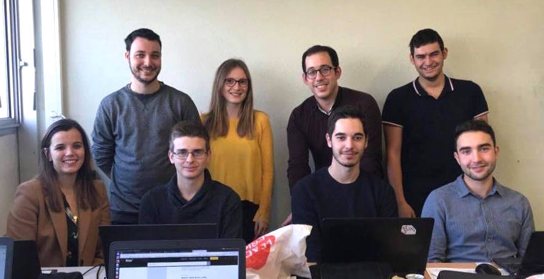
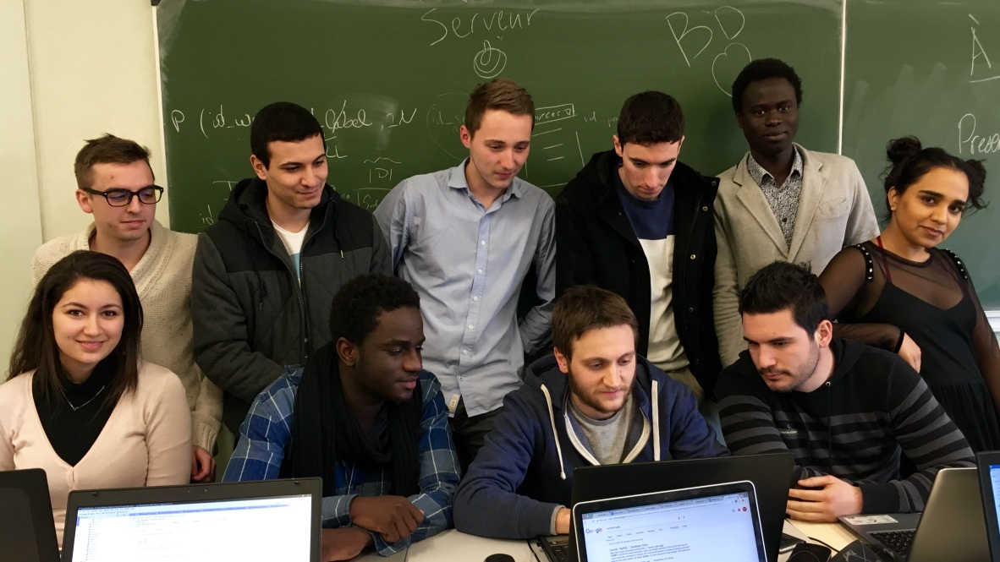

WatchNews est un projet dans le cadre de la formation SID à l’université Paul Sabatier. Il a rassemblé pendant 2 semaines continues les trois promos : L3, M1 et M2 afin de travailler en mode start up.
L’ensemble des étudiants de la formation était alors divisée en 10 groupes avec pour chacun un chef d’équipe et un enseignant dit référent. L'équipe projet inter promo est composé des enseignants
C. Chouquet, K. Pinel-Sauvagnat, L. Tamine-Lechani, Y. Pitarch, M. Serrurier étaient les chefs du projet, qui jouent aussi le rôle du client. Liste des groupes avec leur objectif : o Groupe 1: Supervision : Supervision du choix, questions juridiques : Droits sur la récupération / stockage de contenu ; o Groupe 2: BD-Index : Créer et générer le remplissage de la base de données indexant les mots des articles. Gérer l’évolution de la base (lié aux différentes analyses). Gestion des logs de recherche ; o Groupe 3, BD-serveur : Gérer les requêtes d’interrogation entre le site et la base. Gérer aussi l’interface avec l’analyse statistique ; o Groupe 5, Filtrage de texte : Filtrage, lemmatisation, mettre les textes en forme, trouver les mots composés, le tout avec un temps de traitement acceptable ;
o Groupe 6, Analyse sémantique : enrichir les index de base par une couche sémantique ; o Groupe 7, Prédiction / Classification : Prédire la catégorie de l’article (santé, culture, politique, sport…). Analyse non supervisée à partir des indicateurs sémantiques ; o Groupe 8, Analyse de tendance / Statistiques : Analyse de tendance temporelle pour un mot, traitement d’un mot au cours du temps. Comparaison statistique sources ; o Groupe 9, Application web : Site web responsive avec visuel décidé par groupe 10 ; o Groupe 10, Qualité / Communication : définir une licence sur le code (étude > proposition > décision), visuel du site web et statistiques, charte de codage et template des rapports à rendre, mise en place des tests et communication.
Chaque groupe devaient réaliser un travail préliminaire, rendre un livrable et écrire un rapport.
o Groupe 4, Robot : implémenter un robot qui récupère le contenu des articles de journaux en ligne ;
Chaque groupe à un format d’échange avec un ou plusieurs autre(s) groupe(s).
Une réunion quotidienne avait lieu chaque fin d’après-midi entre les chefs d’équipe. Il y était mentionné le travail effectué dans la journée, les difficultés rencontrées et les objectifs à atteindre pour la suite.Les chefs d’équipes assuraient la liaison entre les chefs de projet et leurs membres respectifs. Ils devaient affecter les tâches entre membres, faire passer les consignes, leur indiquer la direction à suivre, créer une ambiance de travail en commun et parfois même les motiver.
Organisation du projet
- 
- 
-